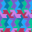

Polyiamonds: isohedral number 6
2 shapes · each shown with one of its simplest grid-aligned tilings, coloured by orbit · all galleries · family table



18-iamond · k = 6
2 shapes · each shown with one of its simplest grid-aligned tilings, coloured by orbit · all galleries · family table
